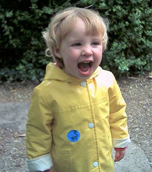

Indigo's Page
Updated 11/07/2002
She enjoys playing with her toy animals,
being read to, and wants to do whatever it is that her parents are doing.
Below is an interview with Indigo, conducted on the 8th of July 2002:
Hi Indigo. How are you feeling today?
Anything else apart from three?
What's your favourite colour?
What's your favourite toy?
What's your favourite TV Programme?
What's your favourite out of plants, trees and flowers?
What's your favourite flower?
What do you like to do?
What's your favourite weather?
What's your favourite animal?
What's your favourite book?
What do you like best about Mummy?
What do you like best about Daddy?
What do you like best about Asher?
What do want to do?
Thank you for your time, Indigo.
Back to the main page.

Indigo is two and a quarter
years old now.
I'm three. (Indigo is 2 and a quarter.)
I don't feel like anything else.
Green.
Elephant Toy.
Pingu.
I like flowers.
Daisy.
Pingu. Playing with toys. I like anything else.
Rainy and windy. Storm! Warm.
Zebra.
A birdy book.
Mummy likes the birdy book.
Daddy's got a book.
Asher's got a toy.
I want to do drawing.